Técnicas de Desenvolvimento de Algoritmos
Unidade 1
- Processamento de Dados: segundo ASCENCIO (1999), é o fato de "receber dados por um dispositivo de entrada (por exemplo, teclado, mouse, scanner, entre outros), realizadar operações e gerar uma resposta que será exibida em um dispositivo de saída"
- O desenvolvimento de um software depende de 3 etapas:
- Análise: Efetua o estudo do projeto (do software) junto ao cliente.
- Algoritmo: Descrição narrativa da lógica do sistema, geralmente aplicado em fluxograma ou português estruturado.
- Codificação: Seria transformar a lógica do programa em líguagem de programação
- Algoritmo: pode ser dito de muitas formas, mas em sua grande maioria, viza a criação de uma sequencia de passos para atingir determinado objetivo ou realizar alguma tarefa.
- Como alguns estudiosos definem algoritmo:
- FORBELLONE, 2005 - “Algoritmo é uma sequência de passos que visa atingir um objetivo bem definido”.
- ASCENCIO, 1999 - “Algoritmo é a descrição de uma sequência de passos que deve ser seguida para a realização de uma tarefa”
- FURLAN DE SOUZA, 2011 - “Um algoritmo representa um conjunto de regras para a solução de um problema”
- MANZANO, 2004 - “Algoritmo é um processo de cálculo matemático ou de resolução de um grupo de problemas semelhantes”
- Existem 3 técnicas principais para desenvolver um algoritmo:
- Descrição Narrativa: o problema é descrito em uma linguagem natural definida por passos.
- Fluxograma: o problema é retratado de forma visual, utilizando simbulos gráficos para definilos.
- Pseudocódigo (ou Potugol): Comandos similares ao códigos da línguagem de programação, tendo uma transcrição muito tranquila entre o Pseudocódigo e a linguagem de programação.
Elementos Gráficos para a Criação de um Fluxograma
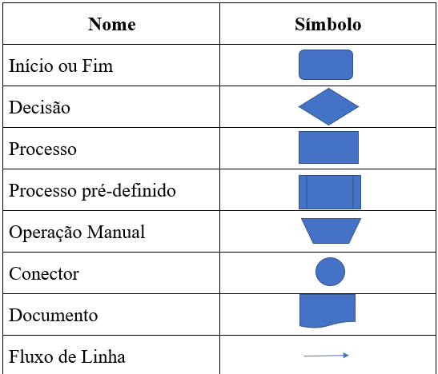
Unidade 2
- Estrutura de Geral de um Algoritmo: é composta por três componentes principais: entrada, processamento e saída. Cada uma dessas partes é fundamental para o funcionamento do algoritmo, garantindo que ele possa: Receber dados, Manipular os dados de acordo com as instruções definidas, Produzir um resultado útil. Além disso, os algoritmos têm estruturas de controle básicas, como seqüencial, condicional e de repetição. Algumas características de um algoritmo são:
- Finitude: o algoritmo deve ter um número finito de passos.
- Definição: cada passo do algoritmo deve ser claramente definido e não ambíguo.
- Entrada e Saída: o algoritmo deve ter entradas bem definidas, que são os dados ou parâmetros necessários para iniciar o processo.
- Eficiência: é medida pelo tempo de execução (complexidade temporal) e pelo uso de memória (complexidade espacial).
- VisuAlg: é um programa que permite editar, interpretar e que também executa algoritmos em português estruturado. Sua liguagem é uma versão portuguesa dos pseudocódigos largamente utilizados nos livros de introdução à programação, conhecida como "Portugol".
Unidade 3
- Estruturas de Decisão: é um bloco de código em um programa que permite que o fluxo do programa siga diferentes caminhos, dependendo de uma condição específica. As estruturas de decisão de um algoritmo são:
- Estrutura de Decisão Condicional: são blocos de código que permitem que o fluxo de um programa siga diferentes caminhos, dependendo de uma condição específica. Alguns tipos de estruturas de decisão são:
- Condicional Simples: é um recurso de programação que permite executar um conjunto de instruções apenas se uma condição for verdadeira. Executa um ou mais comandos se a condição for verdadeira, e finaliza a estrutura se a condição for falsa. Para implementar uma estrutura de decisão simples, é necessário utilizar a palavra "SE" (if).
- Condicional Composta: é uma técnica de programação que executa um bloco de instruções quando uma condição é satisfeita, e outro bloco de instruções quando a condição não é satisfeita. Para implementar uma estrutura de decisão condicional composta, é necessário utilizar a palavra reservada "SENÃO" (else) em conjunto com a palavra "SE" (if).
- Condicional de Caso: é um recurso que permite alterar o fluxo de execução de um algoritmo de acordo com uma condição específica.
- Estrutura condicional simples em fluxograma e em pseudocódigo

- A primeira estrutura condicional a ser abordada é a estrutura condicional simples, em que o comando ou os comandos só serão executados se a condição for verdadeira. Uma condição é uma comparação que possui dois valores possíveis, verdadeiro ou falso.
- Operadores relacionais utilizados nas condições
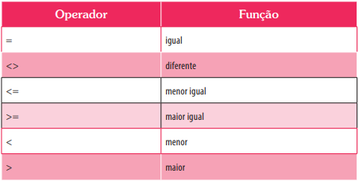
- As condições são comparações que resultam em verdadeiro ou falso. Cada condição terá um operador relacional e estes que estão descrito.
- Operadores lógicos utilizados nas condições compostas
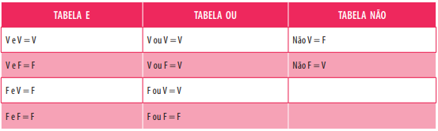
- Quando é necessário ter mais de uma condição, é necessária a utilização de operadores lógicos e estes são: E, OU e NÃO, sendo usados para conjunção, disjunção e negação respectivamente.
- Estrutura condicional composta em fl uxograma e em pseudocódigo

- A segunda estrutura condicional a ser abordada é a estrutura condicional composta, em que o comando1 será executado se a condição for verdadeira e o comando 2 será executado se a condição for falsa.
- Estrutura de caso em fl uxograma e em pseudocódigo

- A terceira e última estrutura de decisão é denominada CASO
Unidade 4
- Estrutura de Repetição: O número de repetições pode ser fixo, tendo a quantidade de repetições previamente estabelecida ou estar atreladoa uma condição, onde loop se matem até que a expressão da condição seja verdadeira. Para realizar uma repetição controlada por um contador, são necessários quatro elementos base: Variável de controle, Valor condicional com teste no início, Variável condicional com teste no final.
- Estrutura Variavel de controle: determinam a ordem em que as instruções, expressões e chamadas de função são executadas. As variáveis de controle são usadas em estruturas de repetição, como o for, para inicializar, testar e atualizar variáveis. As variáveis de um algoritmo podem ser do tipo inteiro (int), decimal (float), decimal de precisão dupla (double) ou caractere (char).
- Estrutura de repetição com variável de controle em fluxograma e em pseudocódigo
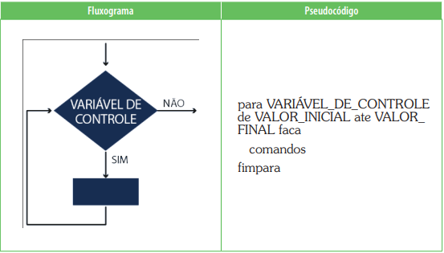
- Exemplo 1 da estrutura de repetição com variável de controle em pseudocódigo
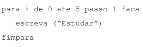
- Exemplo 1 da estrutura de repetição com variável de controle em fluxograma
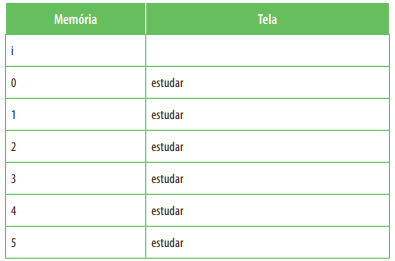
- Estrutura de repetição com variável condicional com teste no início: é uma estrutura de controle de algoritmos que permite repetir uma sequência de ações até que uma condição de interrupção seja satisfeita. A condição de interrupção é representada por uma expressão lógica e o teste condicional é executado no início.
- Estrutura de repetição condicional com teste no início em fluxograma e em pseudocódigo
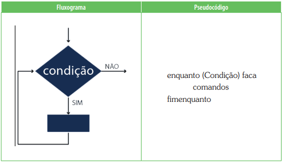
- Exemplo 1 da estrutura de repetição condicional com teste no início em pseudocódig
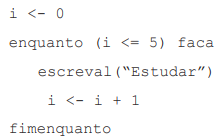
- Exemplo 1 da estrutura de repetição condicional com teste no início em fluxograma
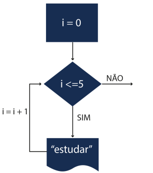
- Teste de mesa do Exemplo 1
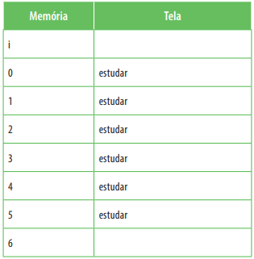
- Estrutura de repetição com variável condicional com teste no final: são recursos de programação que permitem controlar o fluxo de um programa de acordo com condições e repetir blocos de código. Os testes condicionais são fundamentados na lógica convencional e são aplicados sobre os resultados obtidos com operadores relacionais e lógicos.
- Estrutura de repetição condicional com teste no fi nal em fl uxograma e em pseudocódigo
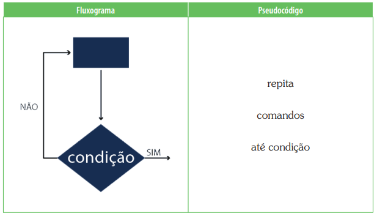
- Exemplo 1 da estrutura de repetição condicional com teste no final em pseudocódigo
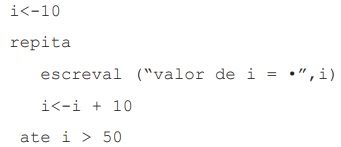
- Exemplo 1 da estrutura de repetição condicional com teste no final em fluxograma
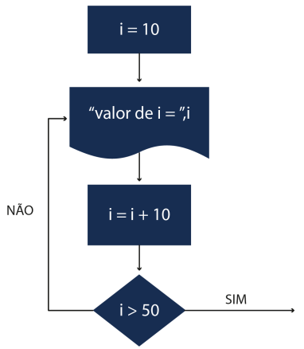
- Teste de mesa do Exemplo 1
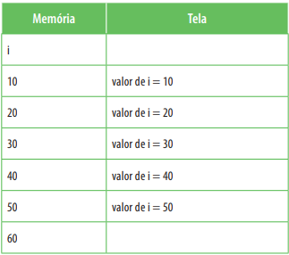
Unidade 5
- Subrotinas: as sub-rotinas, também chamadas de procedimentos ou funções, são blocos de código que realizam tarefas especificas. O uso de sub-rotinas torna os códigos mais organizados e consequentemente de mais fácil entendimento e manutenção, pois o código é separado em blocos de procedimentos.
- Sub-rotinas em fluxograma e em pseudocódigo

- Variáveis Globais: são variáveis que podem ser acessadas em qualquer parte do código de um programa, pois são declaradas fora de todas as funções. Elas podem ser lidas e modificadas por qualquer parte do programa. No entanto, o uso de variáveis globais deve ser feito com cautela, pois pode levar a problemas de design e dificultar a manutenção do código. As variáveis globais podem ser usadas em duas situações:
- Quando são constantes, como bits de configuração de registrador, constantes matemáticas como π, ou valores de referências fixas que nunca mudam.
- Quando são valores de referência para todo o programa, como a velocidade de um motor.
- Variáveis locais ou internas: locais são usadas em algoritmos para otimizar o uso da memória, pois ocupam apenas memória até o final da execução do módulo ao qual pertencem. Uma variável é um nome que define um ou mais valores que são manipulados por um programa durante a sua execução. As variáveis são usadas para salvar e recuperar dados, representar valores existentes e atribuir novos. Existem vários tipos de variáveis, como:
- int: Variável número do tipo inteiro, positivo ou negativo
- float: Variável numérica do tipo decimal
- double: Variável numérica do tipo decimal de precisão dupla
- char: Variável que representa um caractere do tipo texto
- string: Variável que representa um conjunto de caracteres do tipo texto
Unidade 6
- Vetores: segundo ASCENCIO (2012) "Um vetor é também conhecido como variável composta homogênea unidimensional. Isto quer dizer que se trata de um conjunto de variáveis de mesmo tipo, que possuem o mesmo identificador (nome) e são alocadas sequencialmente na memória. Como as variáveis têm o mesmo nome, o que as distingue é um índice que referencia sua localização dentro da estrutura".
- O vetor é declarado juntamente com as outras variáveis, conforme sintaxe a seguir:

- A seguir, alguns exemplos de vetores:
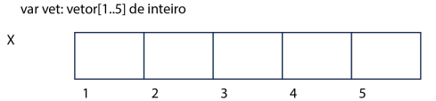
- Acima, podemos ver a criação de um vetor chamado vet, que possui cinco posições. Ou seja, foram alocadas cinco porções de memória para armazenamento de números inteiros. Estas porções de memória são contíguas, isto é, seus endereços são sequenciais.
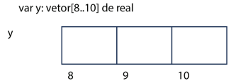
- Acima, é possível ver a criação de um vetor chamado y, que possui três posições. Ou seja, foram alocadas três porções de memória para armazenamento de números reais. Essas porções de memória são contíguas, isto é, seus endereços são sequenciais.
- Para atribuir valores às posições dos vetores, é necessário colocar o nome do vetor e a posição entre colchetes, conforme exemplos abaixo:
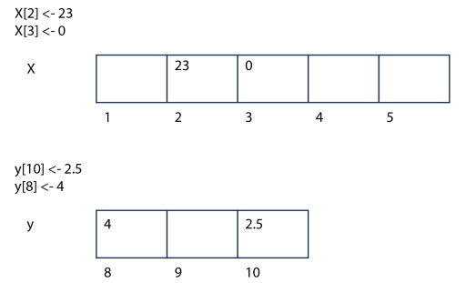
- É possível utilizar a estrutura de repetição com variável de controle para carregar todas as posições de um vetor, conforme exemplo a seguir:
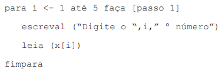
- Nesse exemplo, a estrutura de repetição PARA foi utilizada para garantir que a variável i assuma todos os valores possíveis entre 1 e 5 (posições válidas para o vetor X). Assim, para cada execução da repetição, será utilizada uma posição diferente do vetor.
- Simulação
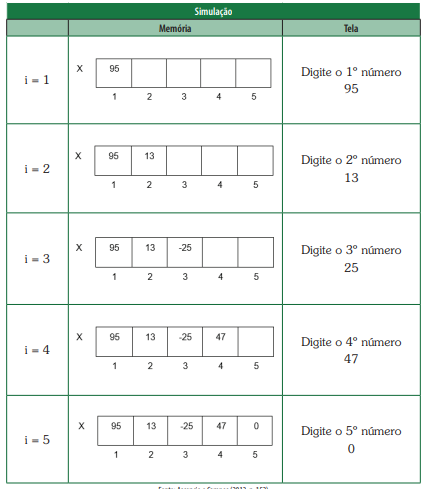
- Da mesma forma que utilizamos a estrutura de repetição para passar por todas as posições de um vetor, a fim de carregá-las com dados digitados pelo usuário, usamos a estrutura de repetição para mostrar os dados armazenados no vetor, conforme exemplo abaixo:
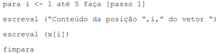
- A seguir, há um exemplo de algoritmo utilizando vetor. O algoritmo deve receber dez números digitados pelo usuário e mostrar qual o menor
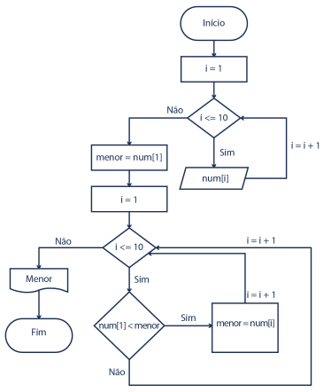
- Matriz: segundo ASCENCIO (2012) "Uma matriz é uma variável composta homogênea multidimensional. Ela é formada por uma sequência de variáveis, todas do mesmo tipo, com o mesmo identificador (mesmo nome), e alocadas sequencialmente na memória. Uma vez que as variáveis têm o mesmo nome, o que as distingue são índices que referenciam sua localização dentro da estrutura. Uma variável do tipo matriz precisa de um índice para cada uma de suas dimensões".
- A matriz é declarada juntamente com as outras variáveis, conforme sintaxe a seguir:

- A seguir alguns exemplos de matrizes:
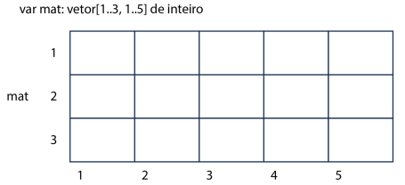
- Acima, podemos ver a criação de uma matriz chamada mat, que possui 15 posições, ou seja, possui 3 linhas e 5 colunas
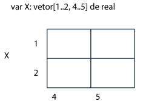
- Acima, podemos ver a criação de uma matriz chamada X, que possui 4 posições, ou seja, possui 2 linhas e 2 colunas
- Para atribuir valores às posições das matrizes, é necessário colocar o nome da matriz e suas posições (linha e coluna) entre colchetes, conforme exemplos abaixo:
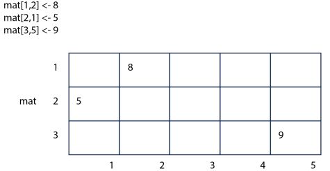
- É possível utilizar estruturas de repetição aninhadas com variável de controle para carregar todas as posições de uma matriz, conforme exemplo a seguir:
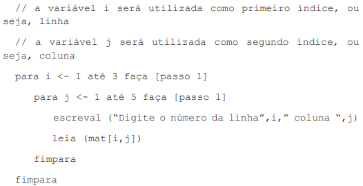
- Simulação das estruturas de repetição para carregar uma matriz
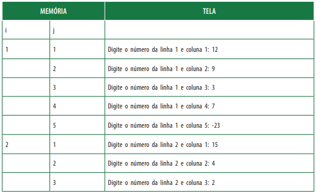
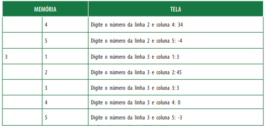
- Assim, podemos imaginar os elementos dispostos em uma estrutura bidimensional, como uma tabela
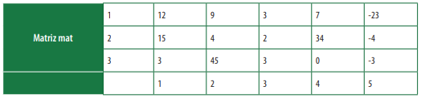
- Da mesma forma que utilizamos estruturas de repetição aninhadas para passar por todas as posições de uma matriz para carregá-las com dados digitados pelo usuário, usamos estruturas de repetição aninhadas para mostrar os dados armazenados na matriz, conforme exemplo abaixo:
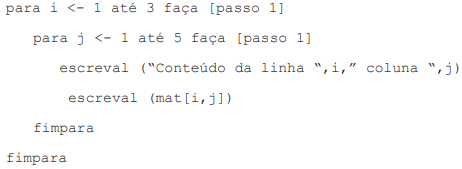
- A seguir, há um exemplo de algoritmo utilizando matriz. O algoritmo deve receber 6 números digitados pelo usuário, armazenando-os em uma matriz 3 X 2. Em seguida, deve mostrar qual o maior número digitado.
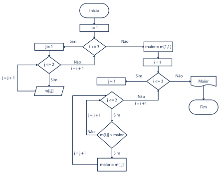